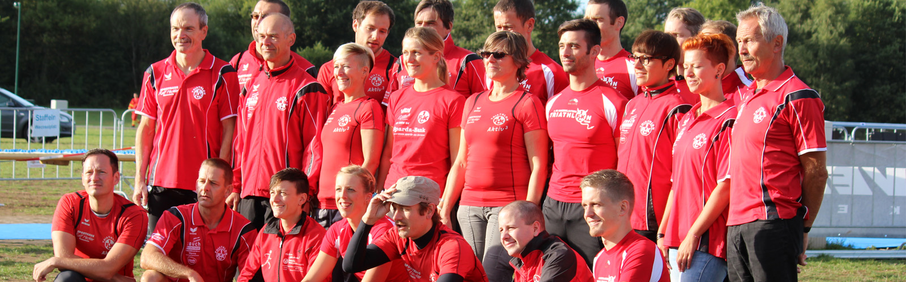

Wer 1. FC Kaiserslautern hört, denkt erstmal an Fußball. Doch der Pfälzer Traditionsverein hat noch viel mehr zu bieten. Auch in den Abteilungen steckt Herzblut... so auch in unserem Triathlon-Team.
Einst hervorgegangen aus der Leichtathletikabteilung des 1. FC Kaiserslautern, umfasst unser Team heute rund 100 aktive und passive Mitglieder. Ob Sprint, Kurz, Mittel oder Lang - in unseren Reihen gibt es Starter auf allen Distanzen - auch einige Hawaii-Finisher! Der Weg bis hinter die Ziellinie wird begleitet von hartem Training, Disziplin und viel Schweiß... und von unserem Trainerteam, das mit Rat und Tat zur Seite steht.
Die Saison 2014 steht vor der Tür. Wir freuen uns auf spannende Wettkämpfe, sportliche Begegnungen mit unseren Mitstreitern aus anderen Teams, neue Mitglieder und über jeden, der uns anfeuert und unterstützt. Wir sehen uns hinter der Ziellinie!

Abteilungsleiter
alt.tobias@fck-triathlon.de

Stellv. Abteilungsleiter, Pressewart
holy.peter@fck-triathlon.de

Sportliche Leitung
krone.tina@fck-triathlon.de

Kassenwart
post.martin@fck-triathlon.de
Materialwart
grill.volker@fck-triathlon.de
Beisitzer
proelss.michael@fck-triathlon.de
Peter Holy, Steffen Höfs,
Christine Westerhorstmann, Tobias Alt